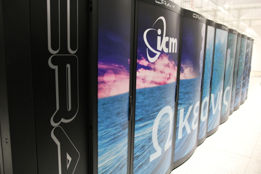

Komputery
Maszyny obliczeniowe w ICM
Poniżej przedstawiamy zestawienie i krótką charakterystykę maszyn obliczeniowych ICM. Po zalogowaniu się przez ssh na węzeł dostępowy (hpc.icm.edu.pl) można ponownie użyć ssh do zalogowania się na kolejną maszynę (np. Okeanos, Rysy), niedostępna zza firewalla. Po zalogowaniu na węzeł dostępowy hpc.icm.edu.pl może występować on pod nazwą hpc.
Info
Zlecanie zadań na system topola możliwe jest bezpośrednio z węzła dostępowego hpc.icm.edu.pl.
W przypadku pozostałych systemów możliwy/wymagany jest dodatkowy krok logowania wykonany z komputera
hpc.icm.edu.pl, np. ssh rysy, ssh okeanos.
| Nazwa | Typ | Architektura | Liczba i nazwa węzłów obliczeniowych | Parametry węzła obliczeniowego |
|---|---|---|---|---|
| Okeanos | Superkomputer | Intel Haswell Cray XC40 | 1084 | 24 rdzenie, 128 GB pamięci RAM |
| Topola | Klaster HPC, Klaster PL-Grid | Intel Haswell Huawei E9000 | 223 | 28 rdzeni, 64 lub 128 GB pamięci RAM |
| Rysy/GPU | Klaster GPU, | Intel Skylake, NVIDIA Volta | 6 | 36 rdzenie, 380 GB pamięci RAM, 4x GPU V100 32GB |
| Rysy/GPU | Klaster GPU, | Intel Skylake, NVIDIA Volta | 1 | 48 rdzeni, 1500 GB pamięci RAM, 8x GPU V100 16GB |
| Rysy/PBaran | Komputer wektorowy, NEC Aurora A300-8 | Intel Skylake, NEC SX-Aurora Tsubasa | 1 | 24 rdzenie, 192 GB RAM / 8 x 8 rdzeni, 8 x 48 GB RAM |
Superkomputer Okeanos

Szczegółowy opis superkomputera Okeanos
Instalacja: Cray XC40
Nazwa: Okeanos
Typ procesora: Intel Xeon E5-2690 v3
Architektura: x86_64
Reprezencja danych: little-endian
Częstotliwość taktowania: 2.6 GHz
Liczba procesorów w węźle: 2 x 12 rdzenie (Hyperthreading x2)
Sockets - Cores - Threads: 2-12-2
Ilość pamięci w węźle: 128 GB
System plików: Lustre (rozproszony system plików)
System operacyjny: SUSE Linux Enterprise Server 15
System kolejkowy: slurm 19.05.4
Superkomputer Topola
Szczegółowy opis superkomputera Topola
Instalacja: Klaster
Nazwa: Topola
Typ procesora: Intel(R) Xeon(R) CPU E5-2650 v3
Architektura: x86_64
Reprezencja danych: little-endian
Częstotliwość taktowania: 2.0 - 3.1GHz
Liczba procesorów w węźle: 28 rdzeni
Sockets - Cores - Threads: 2-14-1
Ilość pamięci w węźle: 64/128 GB
System plików: NFS/lustre/ext4
System operacyjny: CentOS 7
System kolejkowy: slurm 18.08.9
Opis węzłów klastra Topola
| Model CPU | Taktowanie CPU | Sockets: Cores: Threads | RAM | Liczba węzłów | Nazwa |
|---|---|---|---|---|---|
| Intel(R) Xeon(R) CPU E5-2697 v3 | 2.1GHz - 3.0GHz | 2:14:1 | 128 GB | 60 | t1-[1-12], t[13-15]-[1-16] |
| Intel(R) Xeon(R) CPU E5-2697 v3 | 2.1GHz - 3.0GHz | 2:14:1 | 64 GB | 163 | t1-[13-16], t[2-12]-[1-16] |
Węzły topoli różnią się tylko wielkością pamięci RAM. System kolejkowy automatycznie dobierze typ węzła w zależności od zapotrzebowania na pamięć podaną przez użytkownika
Superkomputer Rysy
Szczegółowy opis superkomputera Rysy
Instalacja: Klaster
Nazwa: Rysy
Typ procesora: Intel(R) Xeon(R) Gold 6154/6252 CPU
Architektura: x86_64
Reprezencja danych: little-endian
Częstotliwość taktowania: 2.1/3.0 - 3.7GHz
Liczba procesorów w węźle: 36 rdzeni
Sockets - Cores - Threads: 2-18-1
Ilość pamięci w węźle: 380/1500 GB
System plików: nfs4/lustre
GPU: NVIDIA Tesla V100 16/32GB
System operacyjny: CentOS 7
System kolejkowy: slurm 20.02.3
Opis węzłów klastra Rysy
| Model CPU | Taktowanie CPU | Sockets: Cores: Threads | RAM | GPU | Liczba węzłów | Nazwa |
|---|---|---|---|---|---|---|
| Intel(R) Xeon(R) Gold 6252 | 3.0GHz - 3.7GHz | 2:18:1 | 380 GB | 4x NVIDIA Tesla V100 32GB | 6 | rysy-n[1-6] |
| Intel(R) Xeon(R) Gold 6154 | 2.1GHz - 3.7GHz | 2:24:1 | 1500 GB | 8x NVIDIA Tesla V100 16GB | 1 | rysy-n7 |
| Intel(R) Xeon(R) Gold 6126 | 2.6GHz - 3.7GHz | 2:12:1 | 192 GB | 8x NEC Vector Engine Type 10B 48GB | 1 | pbaran |
Informacje o systemie (hardware)
Poniższe komendy slurm'a pozwalają na samodzielne sprawdzenie informacji o systemie:
scontrol show partition <nazwa_partycji> # właściwości partycji
scontrol show node <nazwa_węzła> # właściwości węzła
cat /etc/os-release # informacje o systemie operacyjnym
df -Th # informacje o systemie plików
lscpu # informacja o architekturze cpu (warto wykonać te komendę na węźle obliczeniowym)
sinfo -N -l # lista węzłów
sinfo -l -N | awk '{printf ("%1s %15s %15s %15s %10s %10s \n", $1, $2, $3, $5, $6, $7)}' # formatowanie kolumn
smap -i 2 # quasi-graficzna informacja o wykorzystaniu węzłów
QOS na poszczególnych systemach
QOS - Quality of Service
Topola - qos
[username@hpc ~]$ sacctmgr show qos format=name,MaxWall,Priority,MaxTRESPU%50
Name MaxWall Priority MaxTRESPU
---------- ----------- ---------- ---------------------------------------------
normal 0
hpc 7-00:00:00 750
plgrid 7-00:00:00 750
egi 7-00:00:00 500
meteo 1500
Okeanos - qos
okeanos-login1 /home/username> sacctmgr show qos format=name,MaxWall,Priority,MaxTRESPU%50
Name MaxWall Priority MaxTRESPU
---------- ----------- ---------- ---------------------------------------------
normal 0
hpc 2-00:00:00 750
ocean 4-00:00:00 1000 node=1024
ocean-long 7-00:00:00 750 node=256
RYSY - qos
username@rysy ~ $ sacctmgr show qos format=name,MaxWall,Priority,MaxTRESPU%50
Name MaxWall Priority MaxTRESPU
---------- ----------- ---------- ---------------------------------------------
normal 2-00:00:00 100 node=2
limit 06:00:00 100 cpu=8,gres/gpu=1,gres/ve=1,mem=90G
short 00:15:00 10000
prio 2-00:00:00 10000
long 7-00:00:00 1 cpu=8,gres/gpu=1,gres/ve=1,mem=90G,node=1
none 0 cpu=0
Skróty:
-
TRES - Trackable RESources. A TRES is a resource that can be tracked for usage or used to enforce limits against
-
PU - Processing Unit.